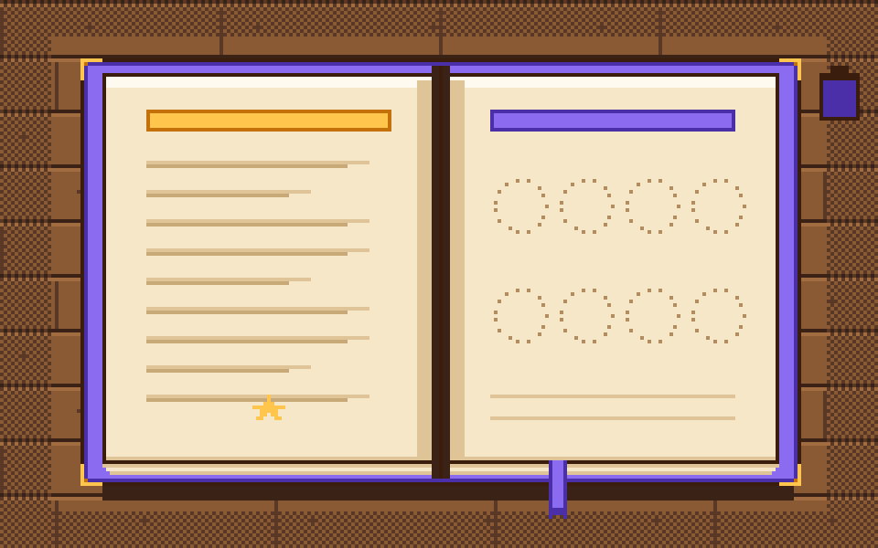

每週委託冊
把你自己的任務排成一條委託鏈。每格印章都來自雲端確認的專注、運動、睡眠、步數或任務；委託冊不發金幣、經驗值或徽章。
雲端確認中…
鎮民的請託

進行中的委託
一天從清晨 5:00 開始。連續型委託只要有一天整天沒蓋章，就從下一個印章重新數起。同時最多進行 3 條。
雲端確認中…
接一條新委託
委託完成證書
證書只收在這台裝置、這個帳號底下，是紀念，不是獎勵。
完成第一條委託鏈，就會在這裡放一張證書。

把你自己的任務排成一條委託鏈。每格印章都來自雲端確認的專注、運動、睡眠、步數或任務；委託冊不發金幣、經驗值或徽章。
雲端確認中…
一天從清晨 5:00 開始。連續型委託只要有一天整天沒蓋章，就從下一個印章重新數起。同時最多進行 3 條。
雲端確認中…
證書只收在這台裝置、這個帳號底下，是紀念，不是獎勵。
完成第一條委託鏈，就會在這裡放一張證書。